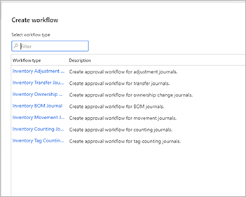
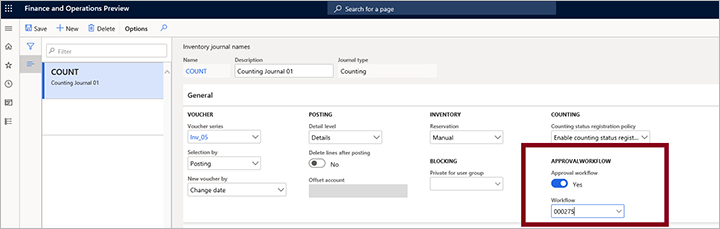
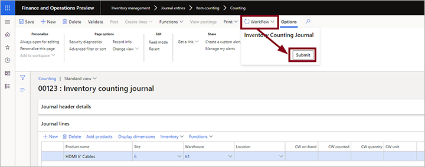

Workflows für die Genehmigung von Bestandserfassungen
Important
Dynamics 365 for Finance and Operations hat sich zu speziell entwickelten Anwendungen entwickelt, mit denen Sie bestimmte Geschäftsfunktionen verwalten können. Weitere Informationen zu diesen Änderungen finden Sie im Dynamics 365-Lizenzierungshandbuch.
In diesem Thema wird beschrieben, wie Sie Workflows für die Genehmigung von Bestandserfassungen für verschiedene Typen von physischen Bestandsbuchungen einrichten und verwenden, zum Beispiel für Zugänge und Abgänge, Bestandsumlagerungen, die Erstellung von Stücklisten (BOMs) und zur Abstimmung des physischen Bestands. Bestandserfassungs-Workflows stellen sicher, dass nur genehmigte Bestandserfassungen in Buchungen gebucht werden können.
Note
Workflows für die Genehmigung von Bestandserfassungen gelten nur für Buchungen, die mit dem Modul Bestandsverwaltung erfasst wurden. Sie funktionieren nicht mit Bestandserfassungen, die vom Modul Lagerortverwaltung ausgelöst werden.
Workflows für die Genehmigung von Bestandserfassungen anlegen
Um diese Funktion einzurichten, müssen Sie einen Workflow für jeden Bestandserfassungstyp erstellen, den Sie steuern möchten. Da verschiedene Bestandserfassungstypen unterschiedliche Genehmigungshierarchien und Workflowschritte haben können, können Sie für jeden Bestandserfassungstyp individuelle Workflows konfigurieren.
Workflows unterstützen die Versionskontrolle und haben jeweils eine Workflow-ID und eine aktive Version. Sie können wählen, ob jede neue Workflow-Version sofort nach der Erstellung aktiviert werden oder inaktiv bleiben soll. Wenn Sie unterschiedliche Workflows für denselben Erfassungstyp benötigen, erstellen Sie mehrere Workflows für diese Erfassungstyp und weisen Sie diesen jeweils einem anderen Erfassungsnamen zu, der diesen Typ verwendet.
Legen Sie Workflows für die Genehmigung von Bestandserfassungen wie folgt an:
Gehen Sie zu Bestandsverwaltung > Einrichten> Bestandsverwaltungs-Workflows.
Wählen Sie im Aktivitätsbereich Neu aus.
Wählen Sie den Bestandserfassungstyp aus, für den Sie einen Workflow einrichten möchten:
- Erfassung der Markierungsinventur
- Erfassung für die Änderung von Bestandseigentümern
- Lagerbestands-Umlagerungserfassung
- Lagerbestandsübertragungs-Erfassung
- Lagerinventurerfassung
- Bestandsstücklistenerfassung
- Lagerregulierungserfassung

Die Workflow-Editor-App wird auf Ihrem Computer gestartet. (Möglicherweise werden Sie aufgefordert, diese Aktion zu genehmigen.) Verwenden Sie den Editor, um Ihren Workflow nach Bedarf zu gestalten. Ausführliche Informationen zur Verwendung des Workflow-Editors finden Sie unter Workflowsystem – Übersicht.
Nach dem Speichern und Schließen der Workflow-Editor-App müssen Sie auswählen, ob diese Workflow-Version aktiviert werden oder inaktiv bleiben soll.
Note
Workflows bieten eine Versionskontrolle. Dies bedeutet, dass Sie eine Liste der von Ihnen erstellten Versionen anzeigen lassen und auswählen können, welche aktiv ist. Um die Liste der verfügbaren Versionen anzuzeigen und auszuwählen, welche aktiviert werden sollen, wählen Sie einen Workflow aus der Liste auf der Seite Bestandsverwaltungs-Workflows. Öffnen Sie im Aktionsbereich die Registerkarte Workflow und wählen Sie Versionen. Für jede Workflow-ID kann jeweils nur eine Version aktiv sein.
Bestandserfassungsnamen Genehmigungsworkflows zuweisen
Im nächsten Schritt weisen Sie jedem Bestandserfassungsnamen einen Bestandserfassungsworkflow zu. Sie können für jeden Bestandserfassungsstyp mehrere Bestandserfassungsnamen einrichten.
Um einem Bestandserfassungsworkflow einen Bestandserfassungsnamen zuzuweisen, gehen Sie wie folgt vor:
Gehen Sie zu Bestandsverwaltung > Einrichten > Erfassungsnamen > Bestand.
Wählen Sie einen Erfassungsnamen aus der Listenspalte aus, um die Einstellungsseite zu öffnen.
Auf dem Inforegister Allgemein stellen Sie die Option Genehmigungsworkflow auf Ja. Klicken Sie auf Ja, wenn Sie zum Bestätigen Ihrer Auswahl aufgefordert werden.

Öffnen Sie die Workflow-Drop-down-Liste und wählen Sie den gewünschten Workflow aus. Die Liste zeigt alle aktiven Workflows, die Sie mit der Workflow-Editor-App erstellt haben.
Eine Bestandserfassung anlegen und zur Genehmigung senden
Nachdem Sie einen Bestandserfassungsnamen mit dem entsprechenden Workflow für die Genehmigung von Bestandserfassungen verknüpft haben, können Sie neue Bestandserfassungen erstellen, die diesen Namen verwenden, und diese Erfassungen dann mithilfe dieses Workflows zur Genehmigung senden. Sie können die Bestandserfassung erst dann veröffentlichen, wenn der im Workflow festgelegte Genehmiger sie genehmigt hat.
Erweitern Sie im Navigationsbereich Bestandsverwaltung > Erfassungseinträge > Artikel und wählen Sie dann einen Bestandserfassungstyp aus.
Wählen Sie Neu, um eine neue Erfassung des ausgewählten Typs zu erstellen.
Das Dialogfeld Bestandserfassung erstellen öffnet sich. Füllen Sie das Formular wie gewünscht aus und wählen Sie OK, um die Erfassung zu speichern.
Füllen Sie die Erfassung wie erforderlich aus.
Wenn Sie eine Bestandserfassung mit einem damit verbundenen Genehmigungsworkflow erstellen oder öffnen, wird die Schaltfläche Workflow im Aktionsbereich aktiviert. Wenn Sie bereit sind, die Erfassung zur Genehmigung einzureichen, wählen Sie die Schaltfläche Workflow, um ein Drop-down-Dialogfeld zu öffnen, und wählen Sie dann Übermitteln. Die Genehmigungsanforderung wird dann an den entsprechenden Genehmiger weitergeleitet, der mithilfe der für den Workflow konfigurierten Methode benachrichtigt wird.

Um eine Genehmigungsanforderung zurückzurufen, öffnen Sie die entsprechende Erfassung und wählen Sie die Schaltfläche Workflow und dann Zurückrufen. Dadurch wird der Workflow zurückgesetzt.
Wenn Ihre Erfassung genehmigt wurde, können Sie sie veröffentlichen. Um die Erfassung zu veröffentlichen, wählen Sie Veröffentlichen aus dem Aktionsbereich. Wenn die Schaltfläche Veröffentlichen nicht aktiv ist, wurde die Erfassung noch nicht genehmigt.
Eine Genehmigungsanforderung für eine Bestandserfassung beantworten
Als Genehmiger sollten Sie jedes Mal eine Nachricht erhalten, wenn Ihre Genehmigung erforderlich ist (wie im entsprechenden Workflow konfiguriert). Sie können eine Erfassungsgenehmigungsanforderung wie folgt genehmigen oder ablehnen:
- Erweitern Sie im Navigationsbereich Bestandsverwaltung > Erfassungseinträge > Artikel und wählen Sie dann einen Bestandserfassungstyp aus.
- Öffnen Sie die entsprechende Erfassung und überprüfen Sie sie.
- Wählen Sie die Schaltfläche Workflow im Aktionsbereich, um ein Drop-down-Dialogfeld zu öffnen. Wählen Sie eine der folgenden Optionen:
- Genehmigen, um die Anforderung zu genehmigen.
- Ablehnen, um die Anforderung abzulehnen.
- Mehr > Änderung anfordern, um eine Nachricht an die anfordernde Person zu senden und sie zu bitten, etwas Bestimmtes zu ändern und die Anforderung dann erneut zu übermitteln.
- Mehr > Delegieren, um die Genehmigung an einen anderen Benutzer zu delegieren.
- Mehr > Zurückrufen, um die Genehmigungsanforderung zurückzurufen (setzt den Workflow zurück).
- Mehr > Workflowhistorie, um den bisherigen Verlauf dieses Genehmigungsworkflows anzuzeigen.
Die Genehmigungshistorie überprüfen
Wie bei anderen Workflowtypen können Sie die Seite Workflowhistorie nutzen, um die Genehmigungsworkflowhistorie für eine Erfassung anzuzeigen.
So überprüfen Sie die Workflowhistorie für eine Erfassung:
- Erweitern Sie im Navigationsbereich Bestandsverwaltung > Erfassungseinträge > Artikel und wählen Sie dann einen Bestandserfassungstyp aus.
- Öffnen Sie die relevante Erfassung.
- Wählen Sie die Schaltfläche Workflow im Aktionsbereich, um ein Drop-down-Dialogfeld zu öffnen. Wählen Sie Workflowhistorie. Weitere Informationen finden Sie unter Workflowhistorie anzeigen.